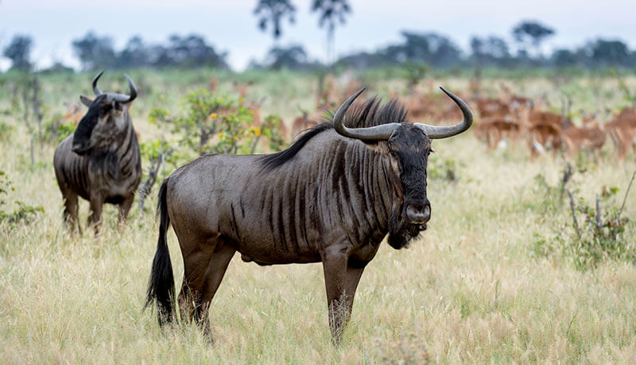
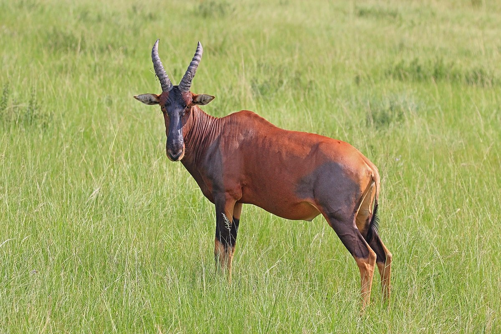
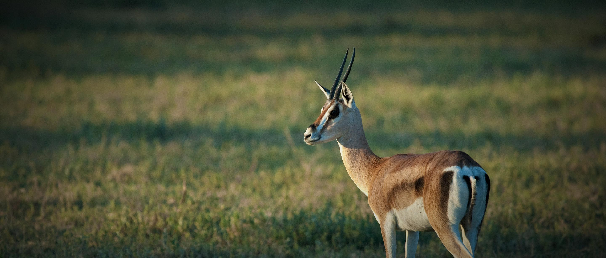

Maasai mara is one of the most famous reserves in the world because it holds one of the seven wonders of the world,"The Great Migration". This is the largest reserve in Narok county in kenya. Maasai mara is named in honor of the Maasai community who inhibit this area and are known to tolerate and live among wild animals. Mara is vast. It covers 1510km2 and borders the great serengeti national park.The terrain of this reserve is primarily open grassland with seasonal riverlets. It also has bushland vegetation and distinctive acacia trees. Maasai mara has a high concentration of bird life and millions of herbivores including "The big 5". Here is a video of the stunning maasai mara national reserve
also called a gnu,wildebeests are large antelopes that exists in sub saharan africa. The wildebeest species that is is found in the maasai mara is the blue wildebeest(also called common wildebeest). Wildebeests have a broad-shoulders which is muscular, a front-heavy appearance and a distinctive and robust muzzle. This wildebeest species normally eat short grass and are normally featured in many documentaries closing the river mara.
A topi is a large antelope that is a subspecies of the common tsessebe. These antelope are very common in maasai mara and are actually part of the great migration of east africa where herbivours move from Tanzania serengeti national park and closes the mara river to maasai mara reserve.
Thompson's gazelles are small antelopes that are very common in maasai mara. They weigh 20-35kgs and are generally browsers. This small antelopes are very fast and can run at a speed of 80-95km/h. Their main enemy is the cheetah which can also run more faster than them. This small antelopes are mostly found in kenya and Tanzania especially maasai mara.
